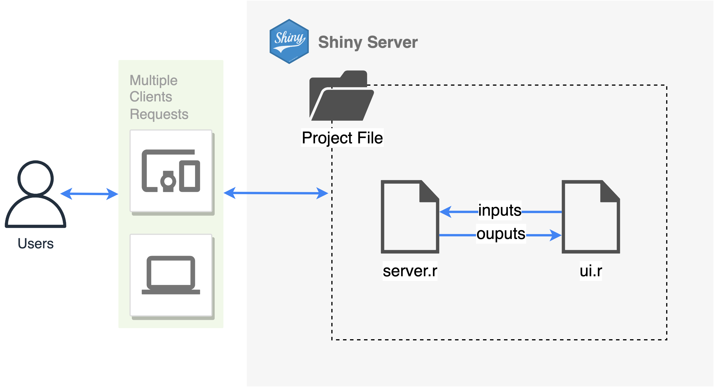

Project Overview
For the conceptual (proposal) version of the project, click here.
1. Abstract
This project involves conducting Spatial Point Pattern Analysis on forest fires in Indonesia. Specifically, we will analyze Indonesian forest fire hotspot data using this method. For this project, a hotspot is defined as a location with a higher temperature than its surroundings as defined by the Indonesian Meteorology, Climatology, and Geophysical Agency.
The goal of the project is to create a web application that aims to aid users in performing exploratory data analysis, kernel density estimation, first-order spatial point pattern analysis, second-order spatial point pattern analysis, and spatiotemporal area analysis.
The user will be able to make use of the data from all these analysis without needing to write a single of line of code, or needing in depth knowledge about the dataset in the first place, allowing usage of the analysis data for studies or other purposes.
2. Problem & Motivation
Between 2015 and 2019, Singapore experienced severe haze due to forest fires in Indonesia, particularly in the Sumatra and Kalimantan regions. However, there has been little to no haze in the region in recent years. This sparked our interest in investigating the occurrences of forest fires in Indonesia.
Using geospatial analytics, we can easily download, manipulate, and analyze data with the R programming language. Geospatial analysis is incredibly useful in extracting insights and patterns from spatial data that may otherwise go unnoticed. However, this method is not easily accessible to individuals with little to no coding experience. Additionally, although there is a lot of data available on the internet, it can be tedious to obtain and consolidate, with some websites requiring users to log in to view the data.
To address these issues, we created an interactive web application that allows users to carry out analysis simply through interacting with the user interface. By providing an interactive consolidated platform for users to view data and corresponding analyses, we make the data easily accessible while still allowing for customization through the user interface.
3. Project Objectives
Conduct exploratory data analysis and plot a map to gain a rough idea and context of the data being analyzed.
Conduct a first-order spatial point pattern analysis:
- Use kernel density estimation and plot the kernel density map for the fires.
Conduct a second-order spatial point pattern analysis:
Use appropriate functions from F, G, K, and L for spatial cluster analysis.
Conduct a complete spatial randomness test, then a Monte Carlo test.
Conduct spatiotemporal cluster analysis.
4. Main Features
This application mainly provides features to aid users in conducting Spatial Point Patterns Analysis.
Feature 1: Exploratory Data Analysis
Users can view an interactive point map of specific forest fire hotspots and filter them based on certain conditions.
The options that the users are able to filter by are:
Region (Province, City/Regency, District, Sub-district)
Satellites
Year
Confidence level
Date range
Users can also explore the temporal distribution of the data through time series charts of frequency of point events by time.
The options that the users are able to filter by are:
Region
Year
Confidence level
Feature 2: Kernel Density Estimation Map
Users are able to conduct first-order spatial point patterns analysis by viewing kernel density estimation maps of forest fire hotspots.
The adjustable parameters are:
Region of interest
Specific date (choices are derived from data available of that region)
Kernel
Bandwidth (fixed — numeric value or adaptive — user can choose a method)
Feature 3: Spatial Cluster Analysis
Users are able to conduct second-order spatial point patterns analysis to identify and statistically confirm possible interactions between events.
The users will be able to conduct Monte-Carlo simulations to test for Complete Spatial Randomness (CSR), i.e. whether or not events in a given region are independently distributed and the number of events follows a homogenous Poisson distribution.
The functions that the users can use to measure second-order properties are:
G-Function
F-Function
K-Function
L-Function
The adjustable parameters are:
Region of interest
Specific date (choices are derived from data available of that region)
Number of simulations
Correction function
Feature 4: Spatiotemporal Analysis
Users are able to conduct spatiotemporal analysis at point level and at area level.
For point-level analysis, users can compute the space-time K-function for a specific sub-district in a specific year and view either a contour plot, image plot, or perspective plot of the results.
For area-level analysis, users are able to view choropleth maps of aggregated fire hotspot data by sub-district, as well as identify changes in spatial hot spots and cold spots over time.
Note: “Spatial hot spots” refer to clusters with significantly high number of fire hotspots.
Users can do two types of area-level analysis:
Mann-Kendall Test to identify if fire hotspots are increasing or decreasing over time
Emerging hot spot analysis using Gi*
The adjustable parameters are:
Region of interest
Year
Number of simulations
Type of contiguity weights (Row-standardised, Inverse Distance)
Significance level
5. Data Source
The data is sourced from SiPongi+ (https://sipongi.menlhk.go.id/), the official forest fire data portal of the Indonesian Ministry of Environment and Forestry. You can download spatial point data of forest fire hotspots from the portal. The Indonesian Meteorology, Climatology, and Geophysical Agency (2023) defines hotspots as locations where the temperature detected by monitoring satellites is higher than surrounding areas. It is measured in a pre-defined area, so it does not directly correspond to the number of forest fire occurrences. However, it still functions as a good indicator of forest fire incidents and possibly an estimation of the scale of the incident.
6. Literature Review
Spatial and temporal pattern of the human-caused forest fire occurrences in Korea
Authors: Han-Bin Kwak, Woo-Kyun Lee, Myoung-Soo Won, Kyo-Sang Koo, Myung-Bo Lee, Sang-Chul Lee
Summary:
Spatial intensity of human-caused forest fire in Korea was analysed using Kernel intensity index
Spatial clustering of forest fire point data was analysed using Ripley’s K function
Relation to our project:
Forest fire hotspots will be analysed by kernel density, spatial cluster analysis, and spatiotemporal analysis
Spatial clustering of hotspots will be analysed using K, L, F, G functions
Spatiotemporal Patterns of Burned Areas Based on the Geographic Information System for Fire Risk Monitoring
Authors: Muhammad Muhaimin, Dedi Rosadi, Aswin Nur Saputra, Karunia Puji Hastuti, Ismi Rajiani
Summary:
Burned area data for the study were collected from SiPongi+
Study area was confined to South Kalimantan province for four years from 2016-2019
Spatiotemporal hot spot analysis was performed using Getis-Ord Gi* statistic and Moran’s index on aggregated data of the burn area
Density of land fires were analysed using kernel density
Relation to our project:
Analysis on forest fire data in Sumatra between the years of 2015 - 2019
Usage of Getis-Ord Gi* statistics to identify the changes in hot spots and cold spots over time
Spatio-Temporal Analysis of Point Patterns
Author: Abdul-Nasah Soale
Summary:
Spatiotemporal point pattern analysis on earthquakes performed using space-time inhomogenous K-function and pair correlation function.
Spatial distribution was examined using map plots.
Temporal distribution was examined using time series plots and box plots.
Relation to our project:
Usage of space-time K-function for spatiotemporal analysis at point level
Time series plots are incorporated into Exploratory Data Analysis to examine temporal distribution of count of hotspots.
7. Comparison to Existing Applications
SiPongi+
SiPongi+ is the official forest fire data portal of the Indonesian Ministry of Environment and Forestry. This web application features an interactive map displaying daily forest fire hotspot data as point events. Users can download historical hotspot data filtered by region, time range, satellite type, and confidence level. Additionally, the portal provides annual data on carbon dioxide emissions and burnt area by province/city.
LAPAN’s BRIN Fire Hotspot
BRIN Fire Hotspot is the official forest fire data portal of the Indonesian National Institute of Aeronautics and Space (LAPAN). According to the usage guide, the web application displays hotspots collected from satellites above Indonesia and enables users to filter by region, time, and confidence level. Users can view a summary of the total hotspots from all satellites and their confidence levels.
Compared to SiPongi+, the main difference is that BRIN Fire Hotspot allows users to select between two view modes: pixel or cluster. In pixel mode, every individual hotspot point is shown, whereas cluster mode aggregates them into a single centroid based on the clusters to which the hotspots belong. Additionally, users can see a radius of the heat intensity. Users can also download the hotspot point data in CSV format.
FIRMS
Fire Information for Resource Management System is an application created by NASA. Records active fires as well as any fire related data throughout Earth. Allows users to even observe time since detection of fire incidents by hotspots, in hours (from 1 hr since detection to >24 hrs ) . Users can switch between data obtained from different sattelites. Further, they can also view the orbitting paths of the sattelites they use for viewing
Shows data of gridded fire hotspots which have varying colours to show the frequency of fire incidents in those grids. This provides a count of fire hotspots within 0.25 x 0.25 degree grid size for the MODIS( Moderate Resolution Imaging Spectroradiometer) and VIIRS( Visible Infrared Imaging Radiometer Suite) devices mounted on the sattelites.
Users can observe historical data as well as current real time data of hotspots. Historical data allows the user to view hotspot data as per selected date, while current shows hotspot data up to a week.
Our application: FINE
In comparison to existing applications, our application provides greater spatial analysis capabilities. Users can perform first-order and second-order point pattern analyses on regions of interest. Additionally, FINE makes it easier for users to analyse the progression of forest fire incidents over time.
8. Application Design
Architecture

Packages Used
UI & Utility
- tidyverse: for data processing
sf: for working with geospatial data
shiny: for creating a web application
fresh: for theming
shinyjs: for incorporating Javascript behavior into UI
shinycssloaders: for loading bars
shinyalert: for popups
Exploratory Data Analysis
tmap: for creating an interactive map
ggplot: for creating time series chart
Kernel Density Estimation & Spatial Cluster
maptools: a set of tools for manipulating geographic data
raster: reads, writes, manipulates, analyses, and model gridded spatial data (raster)
spatstat: for performing spatial point patterns analysis
sfdep: for analysing spatial dependencies
Spatiotemporal
sfdep: for analysing spatial dependencies
stpp: for analysing spatiotemporal point patterns
10. Timeline